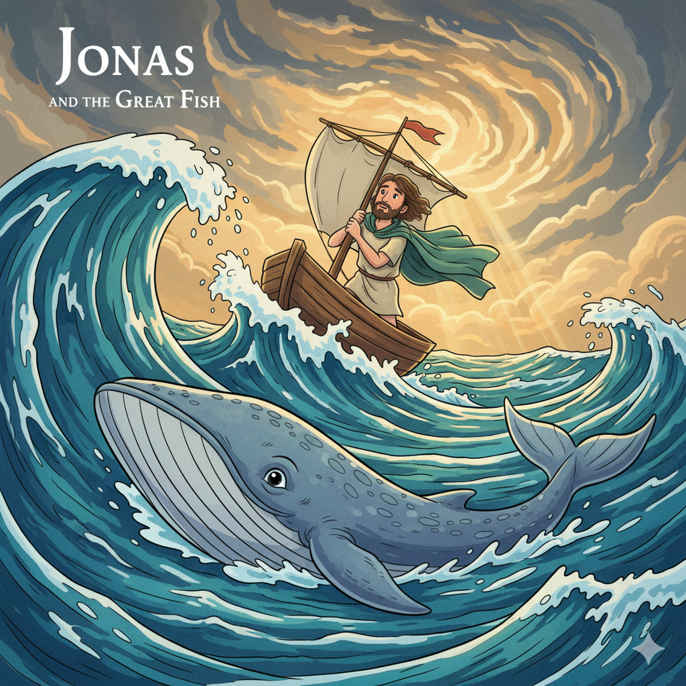
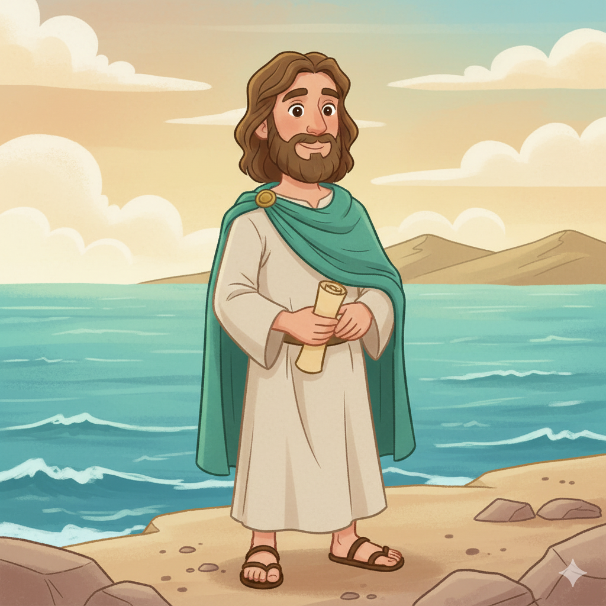
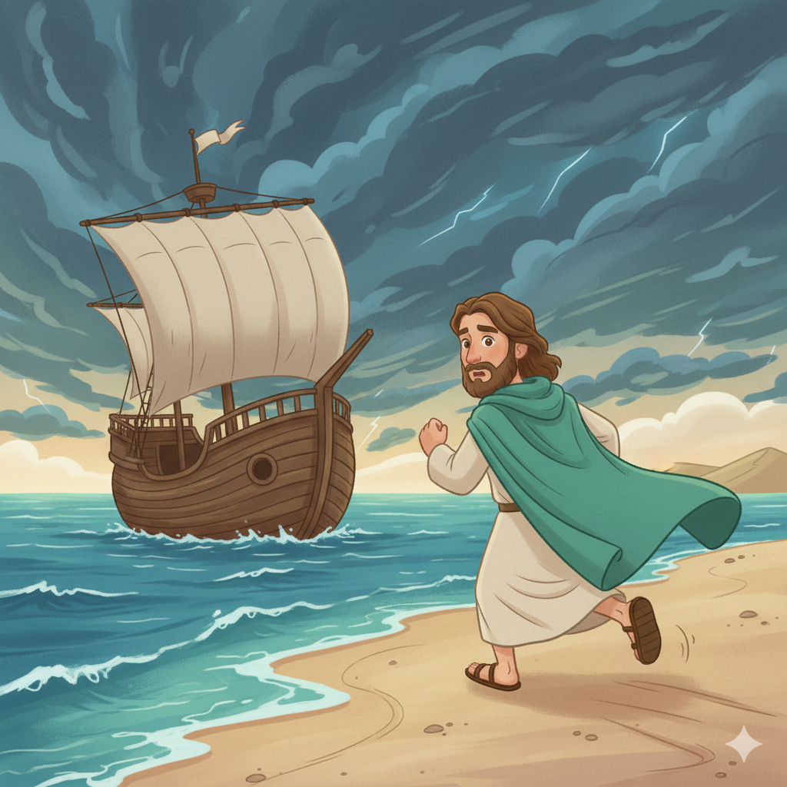
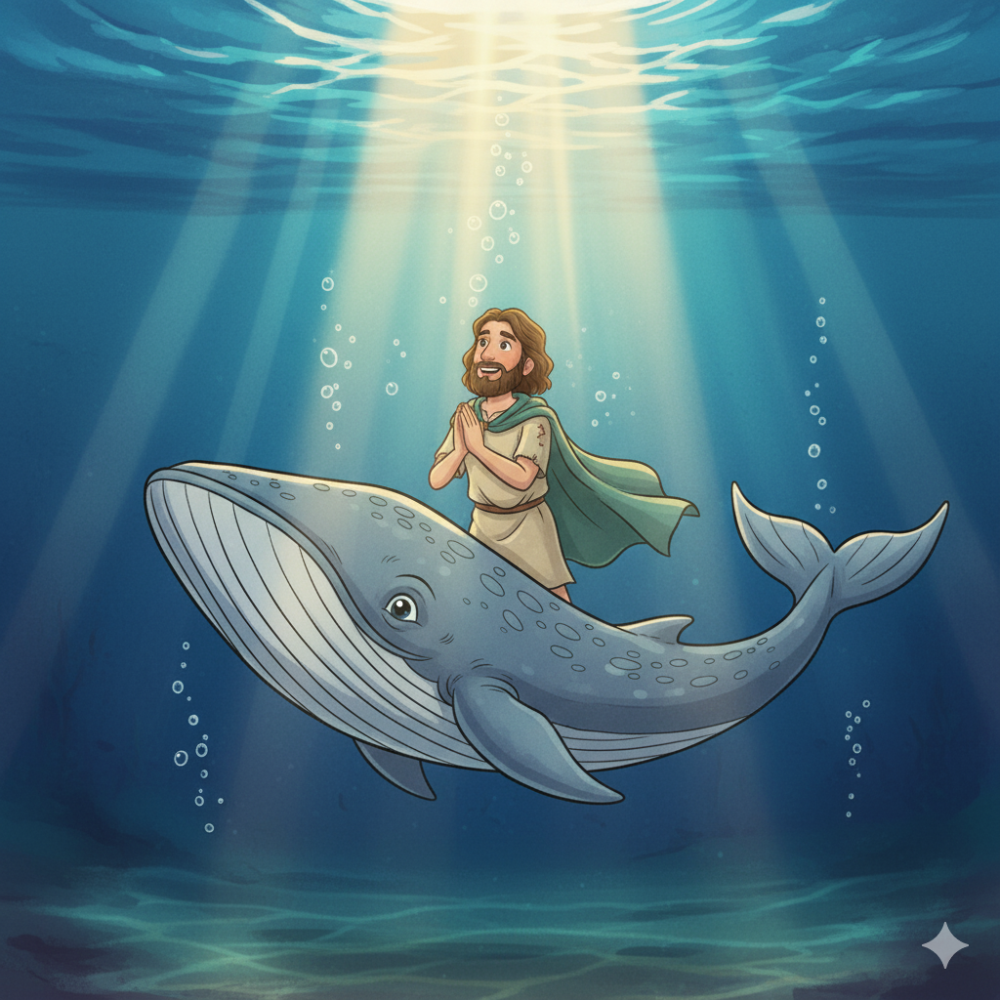
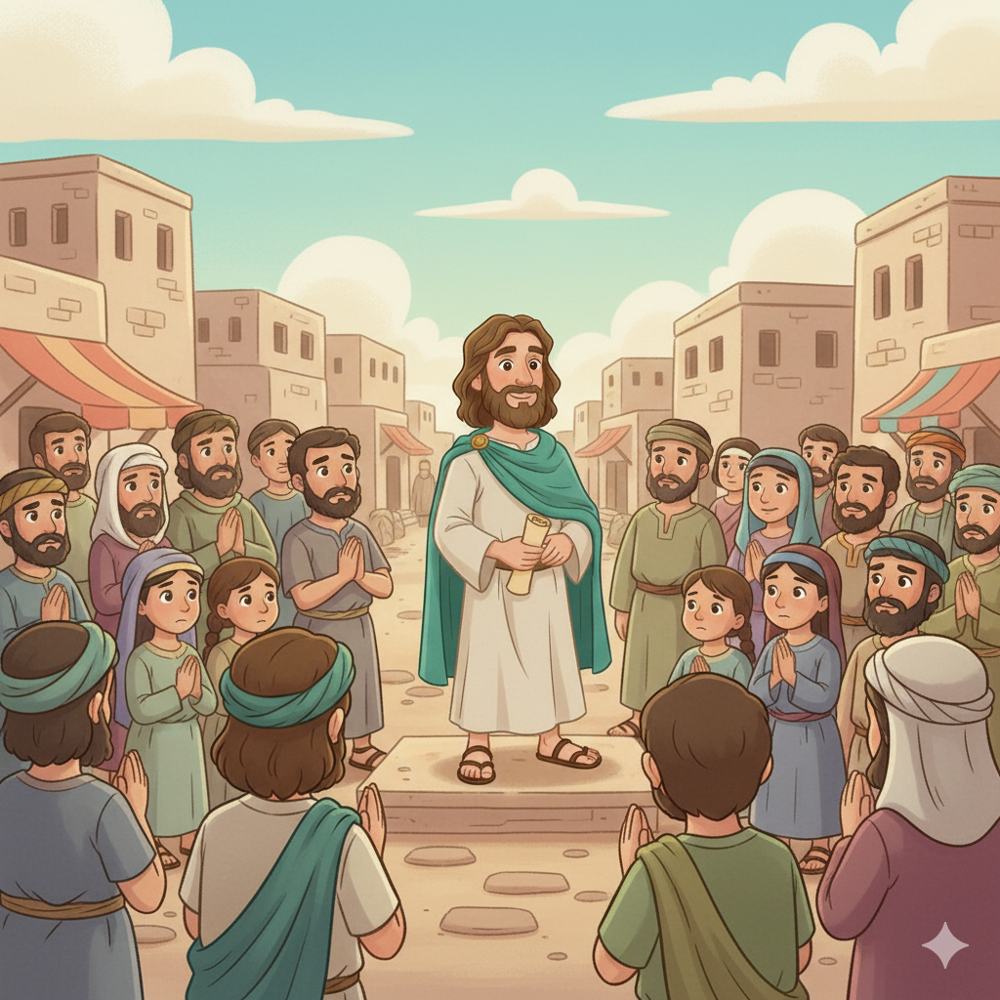

O Profeta Fujão e o Grande Peixe — Um Resumo Visual para Crianças
Jonas quis fugir bem longe,
Mas Deus vê tudo, onde quer que esteja.
Pegou um barco pra Tarsis correr,
Mas uma tempestade veio aparecer!
Não importa pra onde você vá,
O amor de Deus sempre te achará!
📖 Jonas 1:3 - "Mas Jonas se levantou para fugir da presença do Senhor"
Dentro do peixe três dias passou,
Jonas orou e a Deus clamou.
"Me perdoa, Senhor, vou obedecer!"
E o grande peixe o fez aparecer!
Quando erramos e nos arrependemos de coração,
Deus nos perdoa e nos dá nova direção!
📖 Jonas 2:10 - "E o Senhor falou ao peixe, e este vomitou Jonas em terra seca"
Jonas pregou em Nínive, cidade má,
E todo mundo se arrependeu lá.
Deus perdoou aquele povo inteiro,
Mostrando que Seu amor é verdadeiro!
Não importa quem você é ou de onde vem,
Deus ama a todos, sem exceção também!
📖 Jonas 3:10 - "Viu Deus o que fizeram... e Deus se arrependeu do mal que tinha dito lhes faria"
📖
"A salvação pertence ao Senhor!"
Jonas 2:9
Dentro do ventre do grande peixe, no lugar mais escuro e assustador que se pode imaginar, Jonas lembrou que só Deus pode salvar. Esta verdade vale para todos nós também!
Jonas era um profeta que recebeu uma missão especial de Deus: ir até a cidade de Nínive e avisar o povo sobre seus pecados. Mas Jonas tinha medo e não queria ir!
📖 Leia na Bíblia — Jonas 1:1-2
"Veio a palavra do Senhor a Jonas... Levanta-te, vai à grande cidade de Nínive e clama contra ela."
Homens do mar que encontraram Jonas fugindo. Quando a tempestade veio, eles ficaram com medo, mas acabaram conhecendo o Deus verdadeiro!
📖 Leia na Bíblia — Jonas 1:16
"Os homens temeram muito ao Senhor, e ofereceram sacrifícios ao Senhor e fizeram votos."
Uma cidade enorme e cheia de pessoas que faziam coisas erradas. Mas quando ouviram a mensagem de Jonas, todos se arrependeram e mudaram de vida!
📖 Leia na Bíblia — Jonas 3:5
"Os habitantes de Nínive creram em Deus, proclamaram um jejum e vestiram panos de saco, desde o maior até o menor."


📖 Leia em casa!
Jonas tem apenas 4 capítulos — você consegue ler o livro inteiro em menos de 15 minutos!
🏃♂️ Capítulo 1 — A Fuga
Jonas tenta fugir de Deus pegando um barco. Deus manda uma tempestade gigante e os marinheiros jogam Jonas no mar.
📖 Jonas 1:4 — "O Senhor, porém, desencadeou sobre o mar um grande vento e houve tão grande tempestade que o navio ameaçava despedaçar-se."
🐋 Capítulo 2 — A Oração
Um grande peixe engole Jonas! Dentro da barriga, Jonas ora a Deus por três dias e três noites e pede perdão.
📖 Jonas 2:1 — "Então Jonas orou ao Senhor seu Deus do ventre do peixe."
📢 Capítulo 3 — A Obediência
O peixe cospe Jonas na praia. Desta vez Jonas vai até Nínive pregar. Todo povo se arrepende — do rei ao mais humilde!
📖 Jonas 3:10 — "Viu Deus o que fizeram, como se converteram do mau caminho; e Deus se arrependeu do mal que tinha dito lhes faria."
🌳 Capítulo 4 — A Lição
Jonas fica bravo porque Deus perdoou Nínive. Deus usa uma planta e um verme para ensinar Jonas sobre misericórdia e amor.
📖 Jonas 4:2 — "Tu és um Deus clemente e misericordioso, tardio em irar-te e transbordante de amor."
A história de Jonas nos ensina que Deus é misericordioso até com quem parece não merecer. Nínive era uma cidade muito má, mas quando o povo se arrependeu, Deus os perdoou!
📖 Jonas 4:2
"Tu és um Deus clemente e misericordioso, tardio em irar-te e transbordante de amor, e que se arrepende de enviar calamidades."
Jonas aprendeu que Deus não ama apenas o povo de Israel, mas todas as pessoas do mundo inteiro! Deus quer que todos conheçam Seu amor e sejam salvos.
📖 Jonas 2:9
"A salvação pertence ao Senhor!"
Jonas errou — tentou fugir de Deus. Nínive errou — vivia em pecado. Mas Deus deu uma segunda chance para os dois! Isso nos mostra que Deus sempre quer nos restaurar.


O livro de Jonas mostra que quando nos arrependemos de verdade, Deus sempre nos perdoa. Tanto Jonas quanto o povo de Nínive receberam uma segunda chance!
📖 Jonas 3:8-9
"Que cada um se converta do seu mau caminho... Quem sabe se Deus voltará atrás e se arrependará?"
Deus não ama apenas alguns, mas todos os povos da Terra! Ele quer que todos conheçam Seu amor e sejam salvos — e usa pessoas como Jonas (e como nós!) para levar essa mensagem.
📖 Jonas 4:11
"E eu não me compadeço de Nínive, a grande cidade, em que há mais de cento e vinte mil pessoas?"
🌟 Lição Principal: Obedecer a Deus, arrepender-se dos erros e compartilhar o amor de Deus com todos!
Jonas ficou três dias e três noites dentro do grande peixe antes de ser salvo! Imagine só que aventura incrível!
🌊 Curiosidade: A Bíblia não diz que era uma baleia, mas sim um "grande peixe" preparado especialmente por Deus!
✝️ Conexão com Jesus: Jesus mencionou Jonas! Assim como Jonas ficou três dias no peixe, Jesus ficou três dias no túmulo antes de ressuscitar! (Mateus 12:40)
📏 Nínive era GIGANTE: Levava três dias para atravessar a cidade toda! Era uma das maiores cidades do mundo antigo!
Converse com sua família, turma ou professor sobre essas perguntas!
🏃♂️
Jonas quis fugir quando Deus pediu algo difícil. Você já quis desistir de uma tarefa importante? O que você fez?
🐋
No lugar mais escuro e assustador, Jonas se lembrou de Deus e orou. Quando você está com medo ou triste, o que você faz?
❤️
Jonas ficou bravo porque Deus perdoou Nínive. Você acha difícil perdoar alguém que errou muito? Por que Deus perdoa a todos?
Escolha um desafio (ou faça os três!) e seja um explorador da Bíblia!
📖
Leia o capítulo 2 de Jonas em voz alta para alguém da sua família — é a oração que Jonas fez dentro do peixe!
✍️
Escreva em um papel colorido: "A salvação pertence ao Senhor! — Jonas 2:9" e cole no seu quarto.
🙏
Pense em alguém com quem você está chateado. Ore por essa pessoa esta semana, assim como Deus quis que Jonas orasse por Nínive.
Trilho Kids | Desenvolvido com ❤️ para crianças © 2025